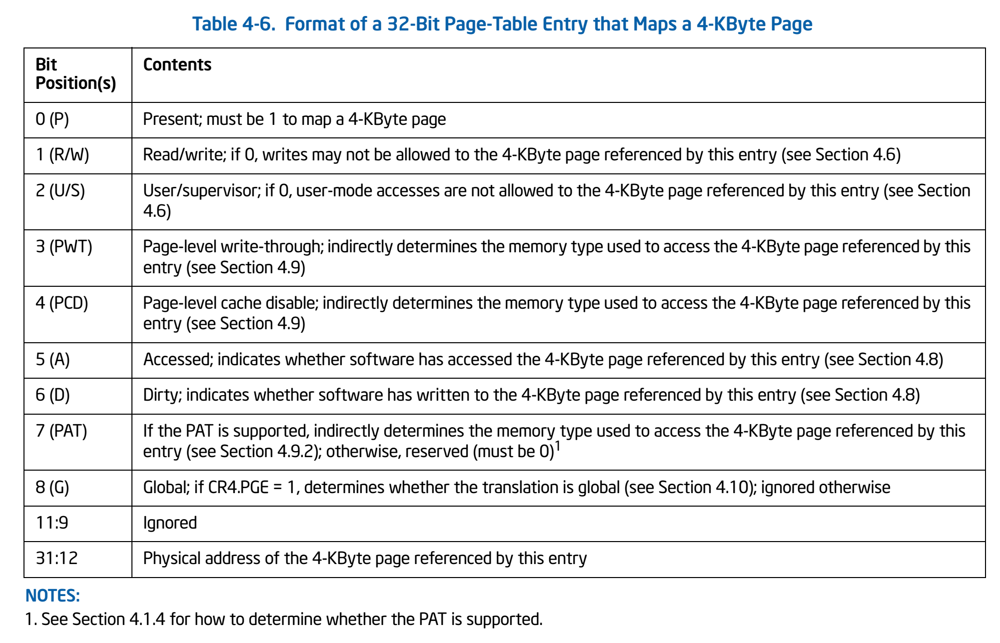
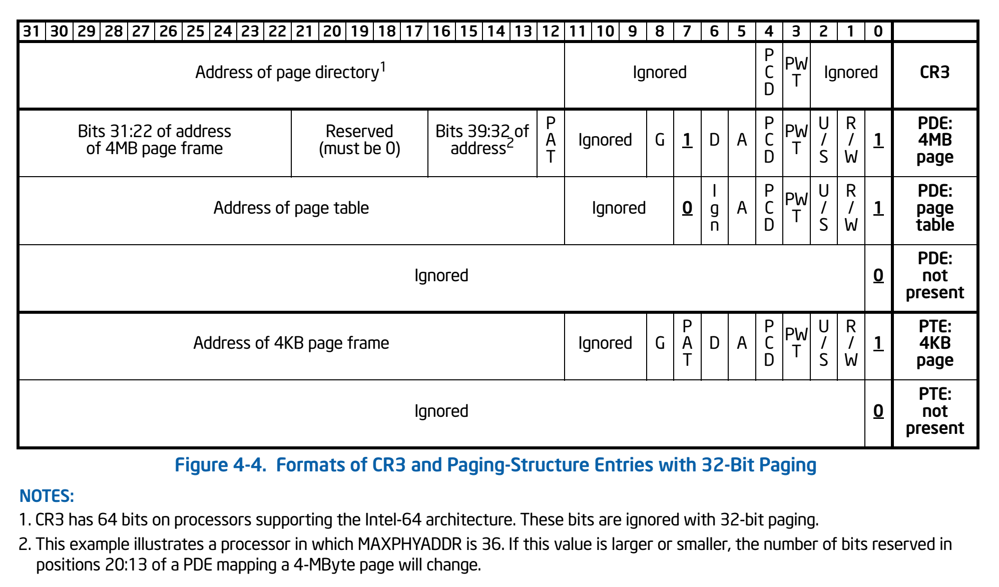

课程内容概述
- 背景
- 段机制
- 页机制
- 普通页表
- 快表
- 多级页表
- 页寄存器
- 反置页表
- 段页式存储管理
背景
6.1 非连续内存分配的需求背景
必须分配连续的会带来很多麻烦
不连续？找到的几率更高，但会带来新问题。比如基本块有多大。
段式：分块大
页式：分块小
设计目标
连续分配的缺点：
• 物理内存必须连续
• 存在外碎片和内碎片
• 内存分配的动态修改困难
• 内存利用率较低
非连续分配的设计目标：提高内存利用效率和管理灵活性
• 允许一个程序使用非连续的物理地址空间
• 允许共享代码与数据
• 支持动态加载和动态链接
实现
非连续分配需要解决的问题：
• 如何实现虚拟地址和物理地址的转换：不同的逻辑地址可能位于不连续的物理区域中
○ 软件实现（灵活，开销大）
○ 硬件实现（够用，开销小）
• 非连续分配的硬件辅助机制
○ 如何选择非连续分配中的内存分块大小？内碎片、外碎片问题？
○ 段式存储管理（segmentation）：块大
○ 页式存储管理（paging）：块小
段机制
6.2 段式存储管理
段地址空间
进程的段地址空间由多个段组成：
• 主代码段
• 子模块代码段
• 公用库代码段
• 堆栈段（stack）
• 堆数据（heap）
• 初始化数据段
• 符号表等
段式存储管理的目的：更细粒度和灵活的分离域共享
段式地址空间的不连续二维结构
虽然在逻辑地址空间中，是按这一顺序排列的，但在物理地址空间中可以不是这样的。
段访问机制
段的概念：
• 段表示访问方式和存储数据等属性相同的一段地址空间
• 对应一个连续的内存“块”
• 若干个段组成进程逻辑地址空间
段访问：逻辑地址由二元组（s，addr）表示
• s——段号
• addr——段内偏移
• 从单地址转换成“段基址+段内偏移”
段访问的硬件实现
• 首先从逻辑地址中得到段号和偏移量
• 在段表中查找段号，得到段基址和段长度
• 由MMU来判断偏移量是否合法（偏移量是否大于段长度）
• 得到物理地址，在物理内存中查找相应内容
页机制
6.3 页式存储管理
页帧（帧、物理页面、Frame、Page Frame）（这是物理的）
• 把物理地址空间划分为大小相同的基本分配单位
• 2的n次方，如512,4096,8192，4k是常用大小
页面（页、逻辑页面、Page）（这是逻辑的）
• 把逻辑地址空间也划分为相同大小的基本分配单位
• 帧和页的大小必须是相同的
页面到页帧之间的转换：
• 逻辑地址到物理地址的转换
• 页表
• MMU/TLB
帧（Frame）
物理内存被划分成大小相等的帧
此时内存的物理地址可以表示成二元组（f，o），其中f是帧号，o是帧内的偏移量
物理地址的前F位可以换成帧号，后S位可以换成偏移量
• F：帧号，F位，共有2^F个帧
• o：帧内偏移，S位，每帧有2^S字节
• 物理地址=f*2^S + o
基于页帧的物理地址计算实例
假定：
• 地址空间为16位
• 页帧大小为9位（512字节）
页（Page）
进程逻辑地址空间被划分为大小相等的页
• 页内偏移=帧内偏移
• 然而页号大小≠帧号大小，因为逻辑地址是连续的，但物理地址不一定是连续的
进程逻辑地址的表示：二元组（p，o）
• p：页号（P位，2P个页）
• o：页内偏移（S位，每页有2^S字节）
页式存储中的地址映射
如何将页映射到帧？
• 逻辑地址中的页号
• 物理地址中的帧号是不连续的
• 不是所有的页都有对应的帧
这个表就是页表。
页表
页表保存了逻辑地址（页号）——物理地址（帧号）之间的映射关系。
• CPU从逻辑地址中得到页号和偏移量
• 在页表中以页号作为下标查找帧号
• 用帧号和偏移量组成物理地址
普通页表
6.4 页表概述
页表结构
每个进程都有一个页表
• 每个页面对应一个页表项
• 随进程运行状态而动态变化（可以动态调整内存空间大小）
• 页表基址寄存器：PTBR，Page Table Base Register
页表项的组成：
• 帧号：f
• 页表项标志：
○ 存在位（resident bit）：逻辑页面是否存在与之对应的物理帧
○ 修改位（dirty bit）：对应的页面中的内容是否被修改了
○ 引用位（clock/reference bit）：在过去一段时间内是否访问过页中的某一个存储单元
页表地址转换实例
有了存在位之后，就会发现，有些逻辑页没有对应的物理帧
页式存储管理机制的性能问题
内存访问性能问题：
• 访问一个内存单元需要2次内存访问
• 第一次访问：获取页表项
• 第二次访问：获取数据
页表大小问题：
• 页表可能非常大
• 64位机器如果每页1024字节，那么一个页表的大小会是多少？（2^54个页面*8个多字节）
如何处理？
• 缓存（Caching）
• 间接（Indirection）访问：切段，多级页表
快表
6.5 快表和多级页表
快表（Translation Look-aside Buffer，TLB）
目标：缓存近期访问的页表项
• TLB使用关联存储（associated ），具备快速访问性能
• 关联存储器：有一组key，可以并行地查找所有表项，得到匹配项
• 因为快表位于CPU中，所以它的速度快、成本高、功耗大
• 如果TLB命中，物理页号可以很快被获取
• 如果TLB未命中，对应的表项被更新到TLB中
多级页表
多级页表
• 通过间接引用将页号分成k级
• 建立页表“树”
• 可以有效减少每级页表的长度，但是如果所有的页表项都存在，则多级页表并没有减少存储量
• 不过大部分进程并不会用到所有的逻辑地址空间
在x86架构中，CR3寄存器用于存储PTBR（页表基址）
二级页表实例
页寄存器
6.6 反置页表
减少页表占用的空间的一种做法
大地址空间问题
对于大地址空间（64-bits）系统，多级页表变得繁琐。
比如：5级页表
逻辑（虚拟）地址空间增长速度快于物理地址空间
页寄存器和反置页面的思路：
• 不让页表与逻辑地址空间的大小相对应
• 让页表与物理地址空间的大小相对应
页寄存器（Page Registers）
每个帧与一个页寄存器（Page Register）关联，寄存器内容包括：
• 使用位（Residence bit）：此帧是否被进程占用
• 占用页号（Occupier）：对应的页号p
• 保护位（Protection bits）：约定这一页的访问方式，可读，可写……
页寄存器示例
• 物理内存大小：40964096=4K4KB=16MB
• 页面大小：4096bytes=4KB
• 页帧数：4096=4K
• 页寄存器使用的空间：8*4096=32Kbytes（假定每个页寄存器占8字节）
• 页寄存器带来的额外开销：32K/16M=0.2%（大约）
• 虚拟内存的大小：任意
页寄存器方案的特征
优点：
• 页表大小相对于物理内存而言很小
• 页表大小与逻辑地址空间大小无关
缺点：
• 页表信息对调后，需要根据帧号可找页号
• 在页寄存器中搜索逻辑地址中的页号
页寄存器中的地址转换
CPU生成的逻辑地址如何找对应的物理地址？
• 对逻辑地址进行Hash映射，以减少搜索范围
• 需要解决可能的冲突
用快表缓存页表项后的页寄存器搜索步骤
• 对逻辑地址进行Hash变换
• 在快表中查找对应页表项
• 有冲突时遍历冲突项列表
• 查找失败时，产生异常
快表的限制
• 快表的容量限制
• 快表的功耗限制（StrongARM上快表功耗占27%）
反置页表
反置页表
基于Hash映射值查找对应页表项中的帧号
• 进程标识与页号的Hash值可能有冲突
• 页表项中包括保护位、修改位、访问位和存在位等标识
查找过程：
• 从逻辑地址中得到页号
• 根据页号和PID计算出Hash值
• 在反置页表中查找对应的页表项，核对页号是否一致，从中找出相应的物理帧号
反置页表的Hash冲突
例子：在页表项中加入next项，指出全部冲突项的列表
段页式存储管理
6.7 段页式存储管理
段页式存储管理的需求
段式存储在内存保护方面有优势，页式存储在内存利用和优化转移到后备存储方面有优势
段式存储和页式存储能否结合？
段页式存储管理
在段式存储管理基础上，给每个段加一级页表
逻辑地址：段号+若干个页号+页内偏移
物理地址：帧号+页内偏移
• 从逻辑地址中得到段号s和页号p，以及偏移o
• 通过段基址（STBR）和s得到对应的段表项
• 访问段表项对应的页表，得到对应的帧号
段页式存储管理中的内存共享
通过指向相同的页表基址，实现进程间的段共享
共享段指向同一个页表
小结
段式、页式、段页式内存分配总结
共同点
• 可以不连续
区别：
• 块的大小
问题：
• 加入页表或段表
• 页表大小问题
○ 快表
○ 多级页表
○ 反置页表
• 实现细节
练习
选择填空题
描述段管理机制正确的是()
- 段的大小可以不一致
- 段可以有重叠
- 段可以有特权级
- 段与段之间是可以不连续的
都对。段的大小显然可以不一致（段描述符中给出的大小不同）。段之间可以重叠（没说不能重叠，而且完全扁平模型就是全都映射到全部物理内存。）段可以有特权级（段描述符中的DPL，访问段的最低特权级）。段之间当然也是可以不连续的。
描述页管理机制正确的是()
- 页表在内存中
- 页可以是只读的
- 页可以有特权级
- 上述说法都不对
前三个都对。当然有的地方不太准确。在80386系统中，一级页表一定在内存中，但二级页表不一定在内存中。PDE和PTE都可以规定访问权限，不过只有U/S（用户/OS权限）和R/W（只读/可读可写）位。
页表项标志位包括()
- 存在位(resident bit)
- 修改位(dirty bit)
- 引用位(clock/reference bit)
- 只读位(read only OR read/write bit)
都有。当然，还不止这些。

可有效应对大地址空间可采用的页表手段是()
- 多级页表
- 反置页表
- 页寄存器方案
- 单级页表
前两个是对的。至于为什么页寄存器不行，老师在Piazza上给出了回复：
- 页寄存器和反置页表很像，但它们的一个区别是进程ID在地址转换中的使用。没有进程ID（也就是说页寄存器方案）时，页表占用的空间仍然是与进程数相关的（也就是每个进程对应一组页寄存器？）。反置页表的大小只与物理内存大小，与并发进程数无关。
- 采用页寄存器的硬件开销会很大。所以现在的通用CPU（包括64位的CPU）没有采用这种方式，大部分还是多级页表。由于有TLB作为缓存，效率还不错。
简答题
为什么要设计非连续内存分配机制？
- 提高分配的灵活性
- 提高内存的利用效率
- 方便共享、充分利用内存空间
- 允许一个程序使用非连续的物理地址空间
- 允许共享代码与数据
- 支持动态加载和动态链接
非连续内存分配中内存分块大小有哪些可能的选择？大小与大小是否可变?
大块好管理，小块更灵活。段式存储下，大小是可变的，且块比较大。页式存储下，大小是固定的，且块比较小。
为什么在大块时要设计大小可变，而在小块时要设计成固定大小？小块时的固定大小可以提供多种选择吗？
固定大小好管理，多种大小比一种大小灵活。可变大小更灵活，通常可变大小也会通过对齐来减少管理难度。小块时如果大小可变，则提供的灵活性没有那么多。
什么是段、段基址和段内偏移？
段表示访问方式和存储数据的类型等属性相同的一段地址空间。段基址是段的起始地址（线性地址）。段内偏移是地址在段内的偏移量。
段式存储管理机制的地址转换流程是什么？为什么在段式存储管理中，各段的存储位置可以不连续？这种做法有什么好处和麻烦？
段式存储管理中，地址转换是段基址（段号）加段内偏移。
段反映了程序的存储逻辑结构（数据段和代码段是分开的），程序不会从一个段的基址去访问另一个段，于是不同的段可以不连续。
好处是可以不连续，方便内存管理；麻烦是地址转换稍微复杂了一些。
什么是页（page）、帧（frame）、页表（page table）、存储管理单元（MMU）、快表（TLB, Translation Lookaside Buffer）和高速缓存（cache）？
- 页帧（帧、物理页面、Frame、Page Frame）（这是物理的）
- 把物理地址空间划分为大小相同的基本分配单位
- 大小一般为2的n次方，如512、4096、8192字节，4KB是常用大小
- 页面（页、逻辑页面、Page）（这是逻辑的）
- 把逻辑地址空间也划分为相同大小的基本分配单位
- 帧和页的大小必须是相同的
- 页表：保存了逻辑地址（页号）——物理地址（帧号）之间的映射关系
- MMU：一种负责处理中央处理器（CPU）的内存访问请求的计算机硬件。它的功能包括虚拟地址到物理地址的转换（即虚拟内存管理）、内存保护、中央处理器高速缓存的控制，在较为简单的计算机体系结构中，负责总线的仲裁以及存储体切换
- TLB：为CPU的一种缓存，由存储器管理单元用于改进虚拟地址到物理地址的转译速度
- Cache：访问速度比一般随机存取内存（RAM）快的一种RAM，通常它不像系统主存那样使用DRAM技术，而使用昂贵但较快速的SRAM技术
页式存储管理机制的地址转换流程是什么？为什么在页式存储管理中，各页的存储位置可以不连续？这种做法有什么好处和麻烦？
页式存储管理中，地址转换流程是页号->物理页帧号加页内偏移。
CPU使用连续的逻辑地址，存储访问时，逻辑地址先分成逻辑页号和页内偏移，然后通过页表定义的对应关系，把逻辑页面转换成物理页号，最后再把物理页号加页内偏移得到物理地址；于是不同的页可以不连续。
好处是可以不连续，方便内存管理中的存储分配和回收；麻烦是地址转换比较复杂（页表项访问开销和页表存储开销），并且频繁进行（每次存储访问会变成两次或更多）。
每个页表项有些什么内容？有哪些标志位？它们起什么作用？

页表大小受哪些因素影响？
页大小、地址空间大小、进程数目、页表级数
快表（TLB）与高速缓存（cache）有什么不同？
TLB中缓存的是线性地址<->物理地址的映射关系，由硬件管理，对软件是透明的。
Cache中缓存的是具体的内存内容，也由硬件管理，对软件是透明的。
为什么快表中查找物理地址的速度非常快？它是如何实现的？为什么它的的容量很小？
因为它是在多个表项中同步查找有没有对应的线性地址项，所以很快。TLB的硬件是怎么实现的……大概瞎写吧。容量小是因为用电路换时间了（多路并行查找），成本和耗电量比较高。
什么是多级页表？多级页表中的地址转换流程是什么？多级页表有什么好处和麻烦？
就是套了很多层的页表。地址转换流程就是不断根据每一级的页号和页表基址查找下一级的页表基址（或者查到页表项）。
好处是减小了页表占据的空间（因为程序一般不会用完自己的虚拟地址空间，所以大部分次级页表不需要生成）；麻烦是地址转换变得更加复杂和缓慢了。
页寄存器机制的地址转换流程是什么？
对CPU访问的逻辑地址进行hash，然后查相应页寄存器。
用快表缓存页表项后的页寄存器搜索步骤
- 对逻辑地址进行Hash变换
- 在快表中查找对应页表项
- 有冲突时遍历冲突项列表
- 查找失败时，产生异常
反置页表机制的地址转换流程是什么？
逻辑地址和进程号共同进行hash，然后查相应页寄存器。
查找过程：
- 从逻辑地址中得到页号
- 根据页号和PID计算出Hash值
- 在反置页表中查找对应的页表项，核对页号是否一致，从中找出相应的物理帧号；处理hash冲突
反置页表项有些什么内容？
PID、逻辑页号、标志位（可能还应该有指向下一个hash相同的页表项的指针）
段页式存储管理机制的地址转换流程是什么？这种做法有什么好处和麻烦？
首先从逻辑地址翻译成线性地址（段机制），再从线性地址翻译成物理地址（页机制）。
好处是……。。。
麻烦是，地址访问过程甚至变得更加复杂和耗时了。
如何实现基于段式存储管理的内存共享？
……就把需要重用的内存映射到不同的段里……
如何实现基于页式存储管理的内存共享？
不同的页表项指向相同的物理页……
请简要分析64bit CPU体系结构下的分页机制是如何实现的
- 说明64bit CPU架构的分页机制的大致特点和页表执行过程
- 正确描述了64bit CPU支持的物理内存大小限制（1分）
- 正确描述了64bit CPU下的多级页表的级数和多级页表的结构或反置页表的结构（2分）
- 除上述两点外，进一步描述了在多级页表或反置页表下的虚拟地址–>物理地址的映射过程（3分）
64位的寻址空间能够寻址16EB 的内存大小，对于目前的硬件来说太大了。在X64体系结构下，只实现了48位的虚拟地址。不同于x86体系结构，每级页表寻址长度变成9位，由于在x64体系结构中，普通页大小仍为4KB，然而数据却表示64位长，因此一个4KB页在x64体系结构下只能包含512项内容，所以为了保证页对齐和以页为单位的页表内容换入换出，在x64下每级页表寻址部分长度定位9位。
为了正确翻译x64的线性地址，其页表也从x86的2级变成了4级。翻译过程可参考Intel手册或者以下链接 http://www.cnblogs.com/lanrenxinxin/p/4735027.html
某系统使用请求分页存储管理，若页在内存中，满足一个内存请求需要150ns (10-9s)。若缺页率是10%，为使有效访问时间达到0.5us(10-6s),求不在内存的页面的平均访问时间。请给出计算步骤。
500=0.9150+0.1x
（2）(spoc) 有一台假想的计算机，页大小（page size）为32 Bytes，支持32KB的虚拟地址空间（virtual address space）,有4KB的物理内存空间（physical memory），采用二级页表，一个页目录项（page directory entry ，PDE）大小为1 Byte,一个页表项（page-table entries PTEs）大小为1 Byte，1个页目录表大小为32 Bytes，1个页表大小为32 Bytes。页目录基址寄存器（page directory base register，PDBR）保存了页目录表的物理地址（按页对齐）。
PTE格式（8 bit） :
VALID | PFN6 … PFN0
PDE格式（8 bit） :
VALID | PT6 … PT0
其
VALID1表示，表示映射存在；VALID0表示，表示映射不存在。
PFN6…0:页帧号
PT6…0:页表的物理基址>>5
在物理内存模拟数据文件中，给出了4KB物理内存空间的值，请回答下列虚地址是否有合法对应的物理内存，请给出对应的pde index, pde contents, pte index, pte contents。
- Virtual Address 6c74
Virtual Address 6b22 - Virtual Address 03df
Virtual Address 69dc - Virtual Address 317a
Virtual Address 4546 - Virtual Address 2c03
Virtual Address 7fd7 - Virtual Address 390e
Virtual Address 748b
比如答案可以如下表示： (注意：下面的结果是错的，你需要关注的是如何表示)
Virtual Address 7570:
–> pde index:0x1d pde contents:(valid 1, pfn 0x33)
–> pte index:0xb pte contents:(valid 0, pfn 0x7f)
–> Fault (page table entry not valid)
Virtual Address 21e1:
–> pde index:0x8 pde contents:(valid 0, pfn 0x7f)
–> Fault (page directory entry not valid)
Virtual Address 7268:
–> pde index:0x1c pde contents:(valid 1, pfn 0x5e)
–> pte index:0x13 pte contents:(valid 1, pfn 0x65)
–> Translates to Physical Address 0xca8 --> Value: 16
链接有上面链接的参考答案。请比较你的结果与参考答案是否一致。如果不一致，请说明原因。
（3）请基于你对原理课二级页表的理解，并参考Lab2建页表的过程，设计一个应用程序（可基于python、ruby、C、C++、LISP、JavaScript等）可模拟实现(2)题中描述的抽象OS，可正确完成二级页表转换。
链接有上面链接的参考答案。请比较你的结果与参考答案是否一致。如果不一致，提交你的实现，并说明区别。
（4）假设你有一台支持反置页表的机器，请问你如何设计操作系统支持这种类型计算机？请给出设计方案。
(5)X86的页面结构
扩展思考题
阅读64bit IBM Powerpc CPU架构是如何实现反置页表，给出分析报告。
interactive understand VM
Virtual Memory with 256 Bytes of RAM：这是一个只有256字节内存的一个极小计算机系统。按作者的[[https://github.com/RobertElderSoftware/recc#what-can-this-project-do|特征描述]]，它具备如下的功能。
CPU的实现代码不多于500行；
支持14条指令、进程切换、虚拟存储和中断；
用C实现了一个小的操作系统微内核可以在这个CPU上正常运行；
实现了一个ANSI C89编译器，可生成在该CPU上运行代码；
该编译器支持链接功能；
用C89, Python, Java, Javascript这4种语言实现了该CPU的模拟器；
支持交叉编译；
所有这些只依赖标准C库。 针对op-cpu的特征描述，请同学们通过代码阅读和执行对自己有兴趣的部分进行分析，给出你的分析结果和评价。